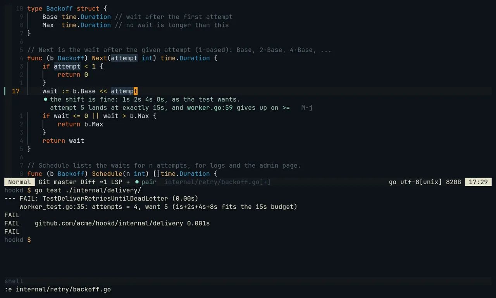
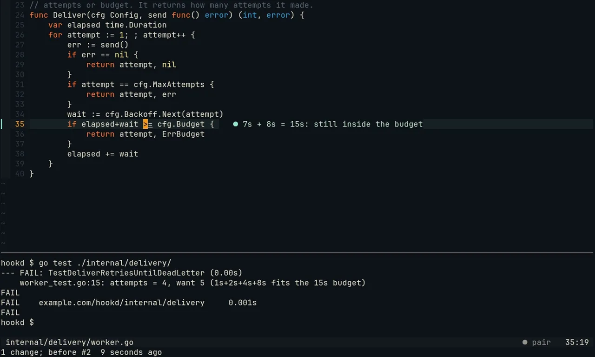
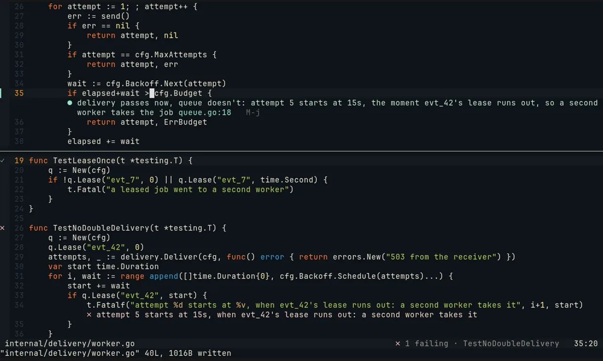
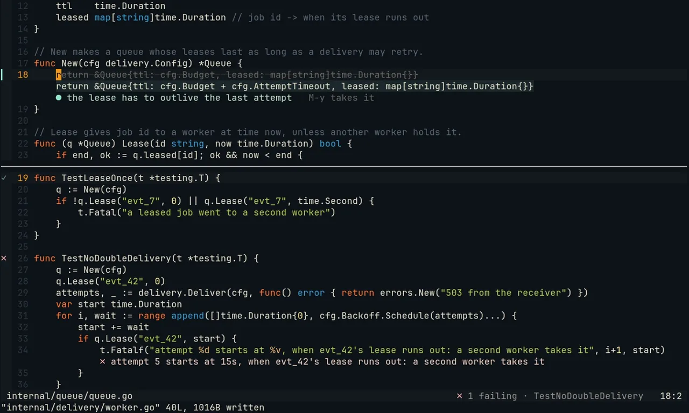
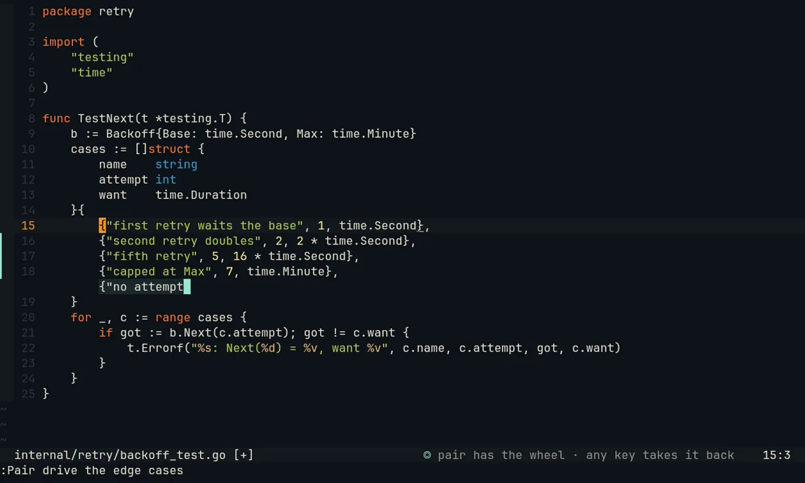
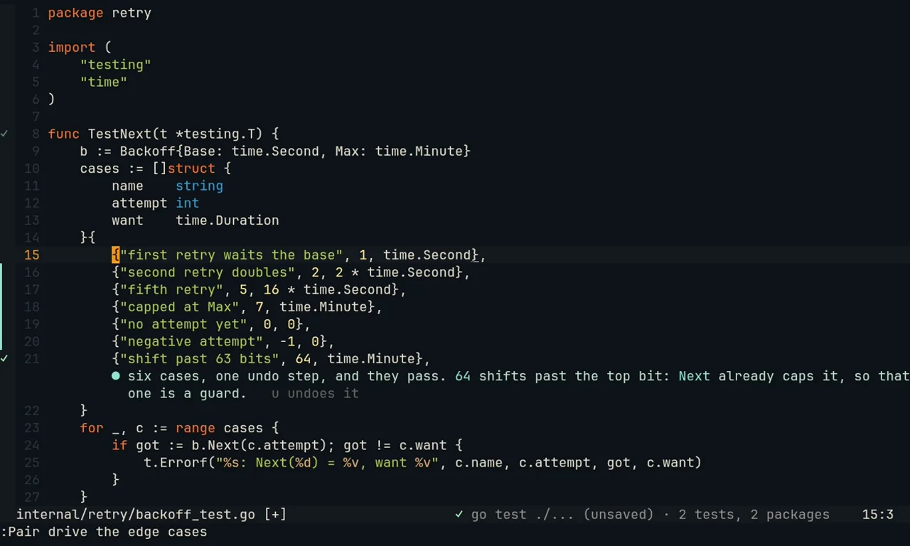

pairing-buddy works inside your session, not beside it. It watches your editor and terminal, speaks when a remark is worth your time, runs what you would skip, and takes the keyboard only when you hand it over. It never writes your files.
v0.9 Navigator, Scout, Driverlocal or cloud modelsMIT
The tour · 3 min · the three moments in Neovim, the roles, install in two commands, the keysHow it was made
The concept
Not a chat window. A colleague who sits next to you.
A good pair doesn't take over and doesn't lecture. They notice what you can't see from where you sit, say it in one sentence at the right moment, and keep their hands where you can see them.
quiet
It speaks when it matters
A small, fast Watcher model scores each moment from 0 to 10; only what clears the bar reaches the Partner, and a budget limits how often it talks. Never while you type. Tell it "useful" or "noise" and it tunes itself.
in plain sight
It acts through your tools
Remarks and highlights in Neovim, searches and test runs in its own terminal pane, edits in your buffer while you watch. No hidden side channel, nothing out of view.
hands off
It never writes your files
An edit lands unsaved in your buffer as one undo step; the disk changes when you :w. Which commands may run is decided in code, not by the model.
Three moments
Where a second person saves you time
One morning on a small Go service with a retry bug. Each moment is something a colleague in the second chair would do.
Captures
Recorded from v0.9 as it ships: the plugin and the daemon in a clean Neovim, with real go test runs. Only the models are scripted: a stand-in server answers the daemon with fixed words and timing, so the tapes record the same clips every time.
01 · it stops the wrong turn
It stops the wrong turn before it costs you twenty minutes
A retry test wants five attempts and gets four. It looks like an off-by-one in the backoff, so you go and fix the shift. As you pause, the pair reads your edit and the worker. Two quiet lines under your edit: the shift is fine, attempt five lands at exactly 15 s, and the worker gives up on >=.
Why it matters. It did the arithmetic (1+2+4+8 = 15) across two files at the moment you committed to the wrong one, then got out of the way. No chat window opened and nothing moved your cursor: its words sit where your eyes already are.

The remark under your edit: the arithmetic, and where the real cause is.

= underlined and a short note">After M-j: the line is tinted, >= underlined, one note at the end.
02 · it runs what you'd skip
It runs what you'd skip, and finds what your fix broke
The delivery tests pass, so you'd push. The pair ran go test -json ./... in its own pane as you saved: the statusline spins, then names the one test that fails, and a ✗ marks it in the test file. Attempt five now starts the instant the queue's lease on the job expires, so a second worker can take the same webhook. It shows a one-line fix in queue.go, and M-y takes it.
Why it matters. A second person keeps an eye on everything you aren't looking at. Here that's a double-delivered webhook, the kind of bug that otherwise reaches you a week later as a customer's duplicate charge. It doesn't arrive as a test log: it arrives as one sentence, under the line that caused it.

One failing test, named in the statusline and marked on its function; the reason is under the line that caused it.

The change in place: the old line struck through, the new one under it, M-y to take it.
03 · the visible hand-over
It takes the keyboard for the boring part, and gives it back
You write the first table case and hand over with :Pair drive the edge cases. The pair types the other six into your buffer while you watch, including the one you'd skip: an attempt of 64 shifts past the top bit. It runs go test -overlay on your unsaved buffer, says they pass, and gives the keyboard back. One u takes all six away.
Why it matters. A hand-over feels safe when you can see it happen. The statusline says who has the wheel, the lines arrive at reading speed, and any key you press takes it back. At the end there is one change, one undo step and a tested result, and nothing is saved until you decide.

While it drives: its cursor at the end of the ghost text, a bar on each line it entered, and the wheel in the statusline.

Handed back: ✓ in the margin and the statusline, and a note on the case you'd have skipped.
Roles
One role at a time, and you choose it
Each role is offered only its own tools, and a policy in code refuses anything else. The role shows in the chat prompt and in Neovim's statusline.
Navigator default
Watches, comments, answers, and points at lines.
Remarks in the chat pane, highlights with a note in Neovim
Opens a file in a split, asking first while you type
Suggests a change as an inline diff: Alt-y takes it
Runs your tests on each save in its own pane, and marks what fails on its line
/navigate · :Pair navigate
Scout
Investigates in its own herdr pane, where you see every command and its output.
Searches with ripgrep, runs tests and builds, reads git log and git diff
Asks before anything that writes; refuses git push, network and root
At most four commands per question
/scout · :Pair scout
Driver when you hand over
Makes one change in your buffer while you watch, then hands back by itself.
One edit, one undo step, unsaved until you :w; your tests run on the unsaved buffer
Any key you press takes the wheel back
Ping-pong TDD: write a failing test, say "your turn"
:Pair drive · /drive · "you take it"
Works with local models
Your models, on your machine
Two roles, any server that speaks the OpenAI-compatible or Anthropic API. One model can serve both.
The Watcher decides whether a moment is worth a remark. It gets under 200 tokens and answers with one number, so a mid-sized local model does it in under a second.
The Partner writes the words and uses its role's tools. Local or cloud, your choice.
Built for mid-sized models: few tools, flat arguments, thinking off by default. Limits that matter live in code, so a model that loops can't do harm.
Your sessions stay local. Memory and feedback are kept in the daemon's data directory, never in your repo. pair doctor checks both models and how fast they answer.
~/.config/pairing-buddy/config.json
{
"level": "normal",
"models": {
// scores each moment with one number: keep it fast"watcher": {
"api": "openai",
"baseUrl": "http://localhost:8080/v1",
"model": "your-small-model"
},
// writes the words: local, or a cloud model"partner": {
"api": "openai",
"baseUrl": "http://localhost:8080/v1",
"model": "your-larger-model"
}
},
// tests Pair runs in its own pane when you save"testOnSave": {"~/src/shop": "go test -json ./..."}
}
Install
Two commands, then it's always there
The daemon installs as a user service that starts at login; every Neovim connects to it on its own.
pair setup writes a commented config, installs and starts the pairing-buddy systemd user service, and prints the next steps. Set your two models in the config.
Run pair doctor: one line per part, with the fix when something is wrong. Then run pair in a herdr pane next to Neovim, type the session goal, and work as usual.
Needs Node.js 22.19+, Neovim 0.11+, and herdr for the chat pane and Scout (without herdr, Pair runs as Navigator in any terminal). Scout also uses bash and ripgrep.